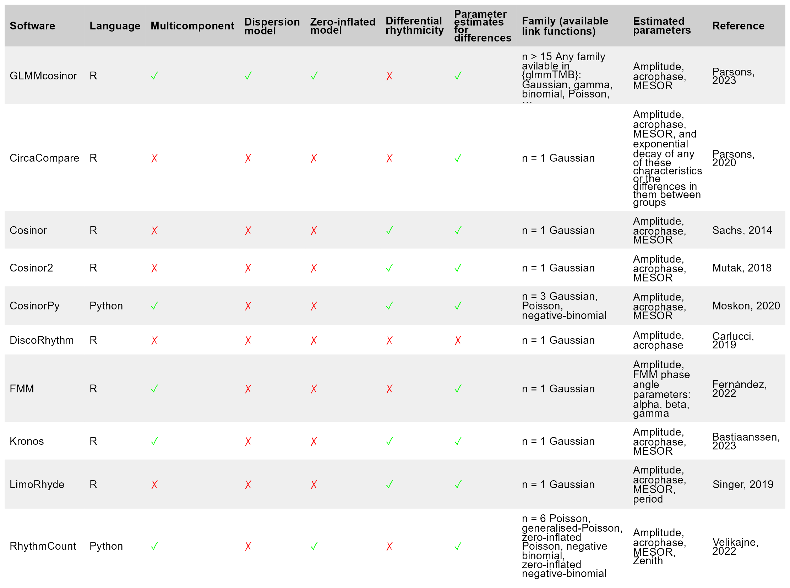
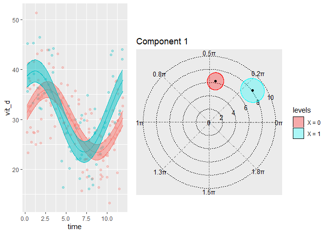

The goal of GLMMcosinor is to fit a cosinor model to rhythmic data with all the flexibility and functionality of a generalised linear (mixed-) model (GLM) framework using glmmTMB.
The package is also accessible via a web app developed using shiny.
For an introduction to the cosinor model, see the getting started vignette.
Existing statistical software for circadian data analyses (including cosinor (Sachs 2023) or circacompare (Parsons et al. 2020)) allows users to fit regression models to rhythmic data, but many are limited due to their inability to specify a link function, multiple components, or a hierarchical structure. GLMMcosinor aims to be comprehensive and flexible and is an improvement on other implementations of cosinor model fitting in R or Python. See table below for features available within currently available methods.
GLMMcosinor makes use of the glmmTMB package framework for estimation of the cosinor model. If the model has no random effects, glmmTMB uses maximum likelihood estimation to estimate the linear coefficients of the model. For models with random effects, a Laplace approximation is used to integrate over the random effects. This approximation is handled by the TMB package which uses automatic differentiation of the joint likelihood function to efficiently compute parameter estimates. A detailed explanation of this process is described here (Kristensen et al. 2016).

Installation
You can install the development version of GLMMcosinor from GitHub with:
# install.packages("remotes")
remotes::install_github("ropensci/GLMMcosinor")
# or, equivalently
install.packages("GLMMcosinor", repos = "https://ropensci.r-universe.dev")Example
This is a basic example which shows you how to solve a common problem:
model <- cglmm(
vit_d ~ X + amp_acro(time, group = "X", period = 12),
data = vitamind
)
summary(model)
#>
#> Conditional Model
#> Raw model coefficients:
#> estimate standard.error lower.CI upper.CI p.value
#> (Intercept) 29.6897959 0.4583696 28.7914079 30.58818 < 2.22e-16 ***
#> X1 1.9018623 0.7919688 0.3496320 3.45409 0.016331 *
#> X0:main_rrr1 0.9307876 0.6260656 -0.2962784 2.15785 0.137087
#> X1:main_rrr1 6.5102900 0.9303406 4.6868560 8.33372 2.6011e-12 ***
#> X0:main_sss1 6.2009896 0.6701952 4.8874311 7.51455 < 2.22e-16 ***
#> X1:main_sss1 4.8184618 0.8963299 3.0616875 6.57524 7.6257e-08 ***
#> ---
#> Signif. codes: 0 '***' 0.001 '**' 0.01 '*' 0.05 '.' 0.1 ' ' 1
#>
#> Transformed coefficients:
#> estimate standard.error lower.CI upper.CI p.value
#> (Intercept) 29.68979587 0.45836964 28.79140787 30.58818 < 2.22e-16 ***
#> [X=1] 1.90186227 0.79196879 0.34963197 3.45409 0.016331 *
#> [X=0]:amp1 6.27045757 0.66965642 4.95795510 7.58296 < 2.22e-16 ***
#> [X=1]:amp1 8.09947222 0.89570576 6.34392119 9.85502 < 2.22e-16 ***
#> [X=0]:acr1 1.42180558 0.09993559 1.22593542 1.61768 < 2.22e-16 ***
#> [X=1]:acr1 0.63715441 0.11493853 0.41187902 0.86243 2.9659e-08 ***
#> ---
#> Signif. codes: 0 '***' 0.001 '**' 0.01 '*' 0.05 '.' 0.1 ' ' 1
autoplot(model, superimpose.data = TRUE)
polar_plot(model)
Citation
citation("GLMMcosinor")
#> To cite package 'GLMMcosinor' in publications use:
#>
#> Parsons R, Jayasinghe O, White N, Rawashdeh O (2024). _GLMMcosinor:
#> Fit a Cosinor Model Using a Generalised Mixed Modelling Framework_. R
#> package version 0.2.0.9000, https://docs.ropensci.org/GLMMcosinor/,
#> <https://github.com/ropensci/GLMMcosinor>.
#>
#> A BibTeX entry for LaTeX users is
#>
#> @Manual{,
#> title = {GLMMcosinor: Fit a Cosinor Model Using a Generalised Mixed Modelling
#> Framework},
#> author = {Rex Parsons and Oliver Jayasinghe and Nicole White and Oliver Rawashdeh},
#> year = {2024},
#> note = {R package version 0.2.0.9000,
#> https://docs.ropensci.org/GLMMcosinor/},
#> url = {https://github.com/ropensci/GLMMcosinor},
#> }